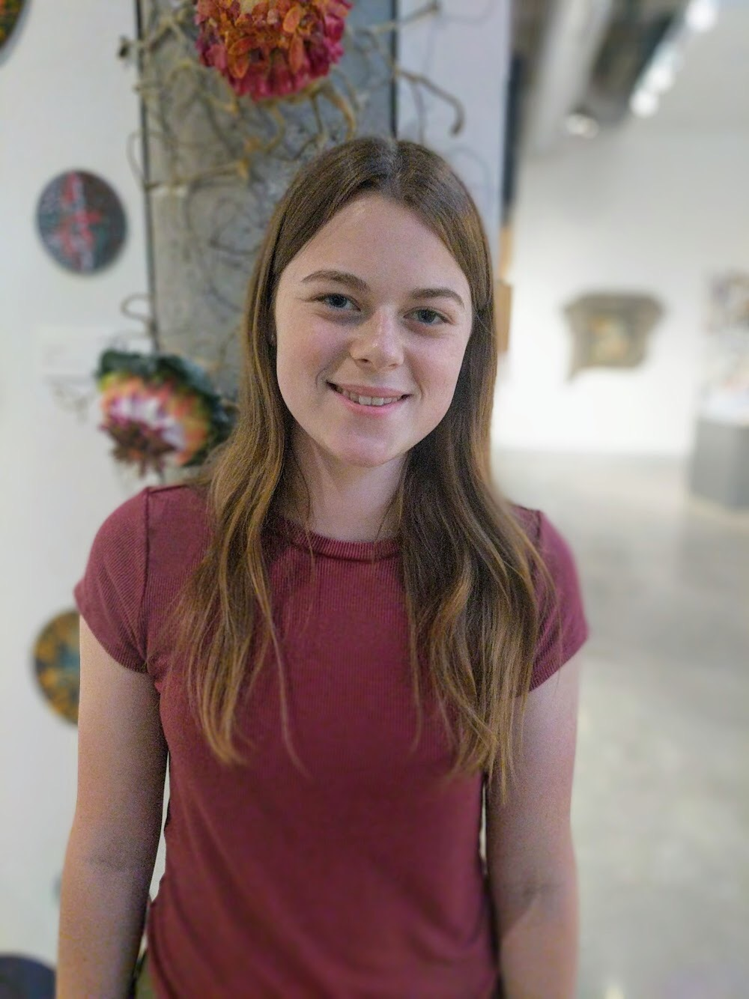
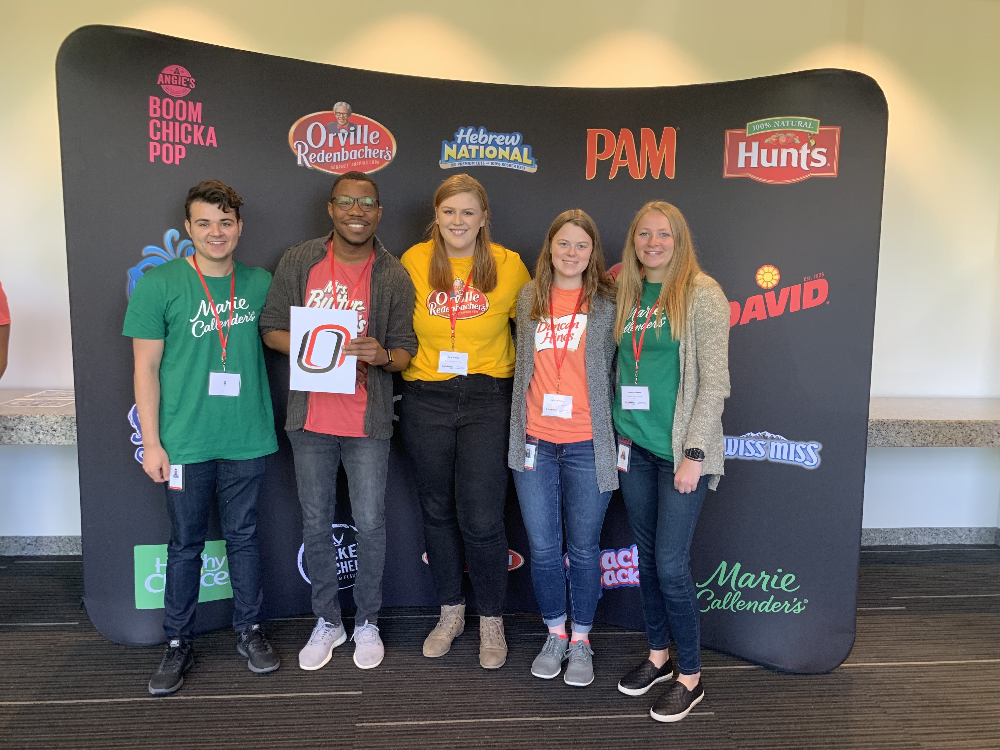

About Me
Welcome to my page!
  My name is Makayla Rohrer and I am a junior studying IT Innovation with a minor in Entrepreneurship.
I currently work as a second year Resident Assistant on Scott Campus and oversee 42 residents in my building.
Each month I am required to host an individual event for my building, as well as put up an informational
bulletin board. We also hold a property wide event each month. Another RA duty is filling out monthy resident
logs. If you have ever lived in the dorms and gotten a text from your RA asking how you are doing, they were
most likely trying to get information for their logs. It is my least favorite job duty, but it is beneficial
for campus to know how everyone is doing. We are also on duty one day a week (24 hrs) and roughly 1 weekend a month. During this time
we are unable to leave campus and have to complete various tasks whether that be lockouts or putting up fliers.
I also work part time as a Technical Specialist at the Apple Store in Village Pointe. I worked at the UNO helpdesk in Eppley
for two years before starting at Apple. I worked on the product zone side of things for about a month before starting
my technical training. As a Technical Specialist, I take any kind of appointment except for Macs.
Spring 2020 Classes
- Innovation Ventures
- Web App Development
- Agile Development
- Psychology for Exceptional Children